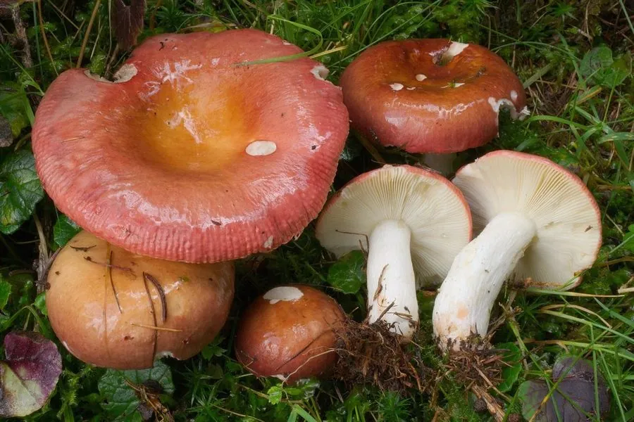

真菌 · 真菌界
正红菇 Russula vinosa

菌盖酒红色、菌肉白色的野生食用菌，煮汤呈粉红色、味道鲜美，是福建、江西等地山区珍贵的“月子菇”。
- 分类
- 门担子菌门纲伞菌纲目红菇目科红菇科属红菇属
- 栖息环境
- 常绿阔叶林地面，与栎树、锥栗等树木形成外生菌根
- 地理分布
- 中国福建、江西、浙江、湖南、广西等地的山区
- 保护级别
- 暂无评估（IUCN 未评估，中国未列入重点保护名录）
物种志
正红菇是担子菌门红菇目的外生菌根真菌，子实体单生或群生。菌盖初期半球形，后平展并中央下凹，直径 5–12 cm，表面呈酒红色至深红色，光滑；菌肉白色，质地脆；菌褶白色至乳黄色，较密；菌柄白色或带淡红色，粗短而中实；孢子印淡黄色。
正红菇与栎树、锥栗等阔叶树形成外生菌根，多生于常绿阔叶林的地面，夏秋季出菇，在中国福建、江西、浙江、湖南、广西等地有分布。它的菌肉鲜美，煮汤时汤色呈粉红色，被一些山区居民视为滋补佳品，民间有“月子菇”之称。红菇属中有不少有毒种类，正红菇必须充分加热后食用；采摘时要有经验，不认识的红色菌类绝不能食用。
形态与习性
- 菌盖直径 5–12 cm，酒红色至深红色
- 菌肉白色，质地脆
- 菌褶白色至乳黄色，较密
- 菌柄白色或带淡红色，粗短而中实
- 孢子印淡黄色
- 采收期夏秋季，雨后常绿阔叶林中出菇
- 食用性可食，必须充分加热
趣味知识
- 正红菇煮汤时汤色呈粉红色，是福建、江西山区的传统食材。
- 它与栎树等阔叶树形成外生菌根，无法离开森林生长。
- 民间把正红菇称为“月子菇”，视为滋补佳品。
- 红菇属中有毒菌，不认识的红色菌类绝不能食用。